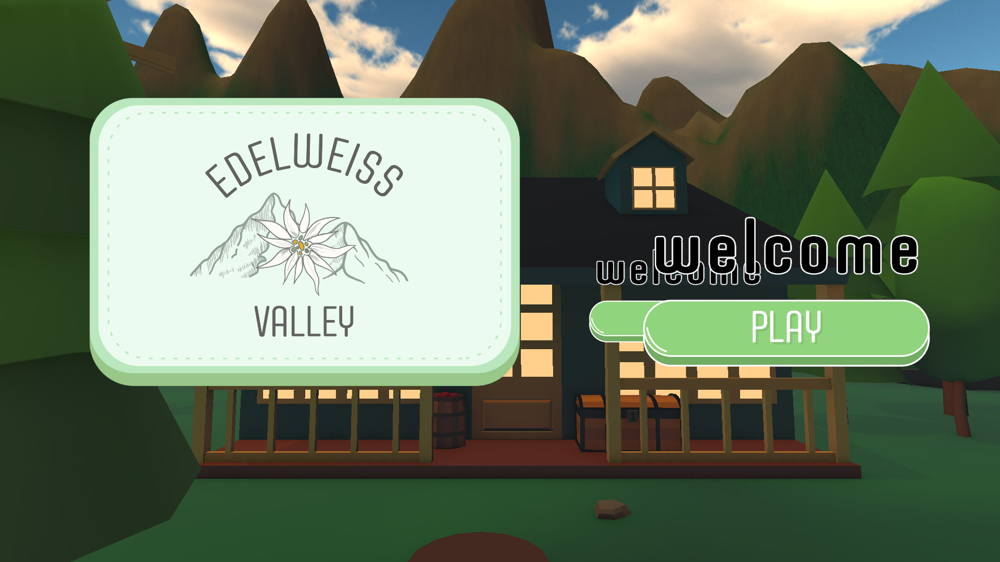
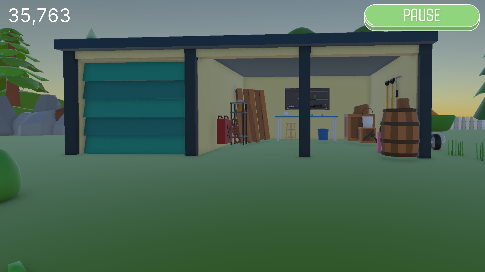
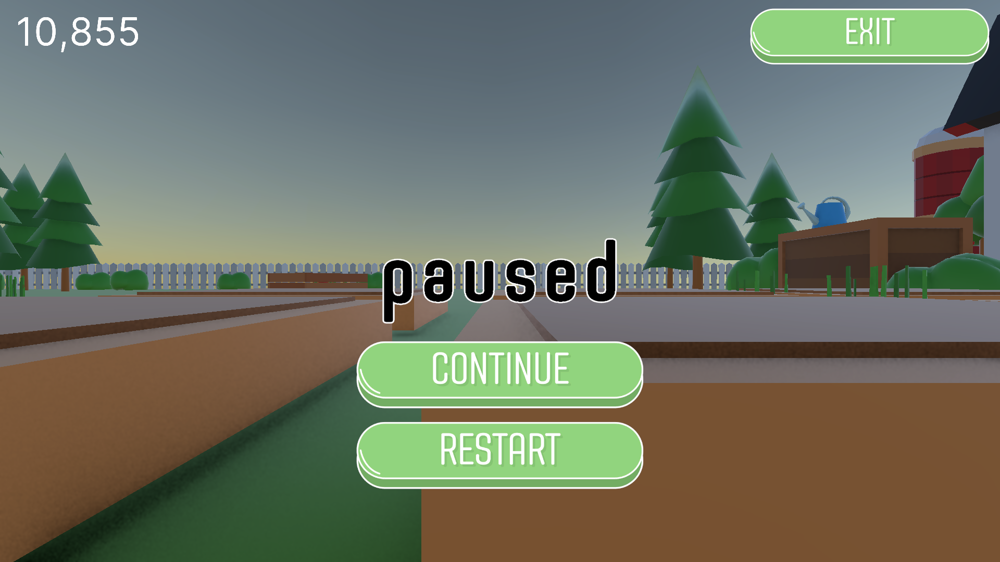

Edelweiss Valley
About:
Edelweiss Valley is an immersive first-person VR game for Meta Quest 2 and 3 about preserving nature for people in occupational therapy. Set in an Austrian garden and farm environment, the game combines ecological education with therapeutic goals from ergotherapy. Players perform relaxing, meaningful tasks such as planting, watering, composting, and recycling to restore environmental health while improving focus and coordination. The game aims to help players build focus and emotional balance.Through accessible interactions and calming low-poly visuals, the game fosters mindfulness and awareness of sustainability. Therapists observe and guide sessions via a PC interface, ensuring adaptability to each client's needs. This game is part of a large project involving USTP and five other institutions, and our contribution to the GreenTouch research initiative. Edelweiss Valley aims to create an engaging, evidence-based experience that supports rehabilitation and environmental learning.
For this project, I have pursued courses on Scrum, Serious Gaming & Gamification, Teambuilding & Project coaching, and Virtual Reality Workshops.
This project was the main focus of my minor European Project Semester Gamification.
Created by:
EPS GamezEngine:
Made in Unity 6 using the XR Interaction ToolkitPlatforms:
Windows, Meta Quest 2/3Videos:
Edelweiss Valley Teaser Edelweiss Valley Process & Interview UI Showcase Gameplay ShowcaseScreenshots:



Process:
Building:
I have worked closely with my fellow designer on the design of the game, logo, UI, levels, barn, etc., and have done a lot of VR testing too.I started the project by building a player prefab with correct parameters for height, walking speed, et cetera. The first-person player character that can be controlled by the Meta Quest 2 or 3.
I have been working on the UI, but it took a lot of time to figure out how to get it in VR yet. At first, it only appeared on the laptop.
I also did a LOT of bugfixing. For example, one week, all the button functionalities have stopped working, while all of them worked before. It seemed to me that someone pushed more than just their changes; maybe someone edited something or pushed metadata with it. Finally, I was able to fix it.
I have built the transition between the scenes using the buttons that can be adjusted to function between different scenes, as you can see.
The UI has gone through multiple iterations and is still being tweaked and updated right now. I have worked on the UI for the therapist on the laptop screen, and now the UI for the player in the VR headset works as well!
I wrote the scripts, made the Canvas and GameObjects like buttons, logos, etc. Both the player and therapist have a separate UI and can pause the game at any time. The therapist is able to pause, restart, or end the client’s session to adjust the therapy flow when needed. The therapist UI also has a timer set to thousands.
I've made the world health bar in the UI of the player, and built a Score System that is attached to it and is indicated in the UI. If the score goes up, the world’s health gets better. Adding score points is made easy using reusable code in the form of a script with a function that can be called from every other script. Lastly, I adjusted the UI so the parameters and world health bar are kept throughout the game and do not reset after the scene transition.
Poster:

Link:
Download it for free on my Itch page!
Download the Windows version for free on my Itch page!